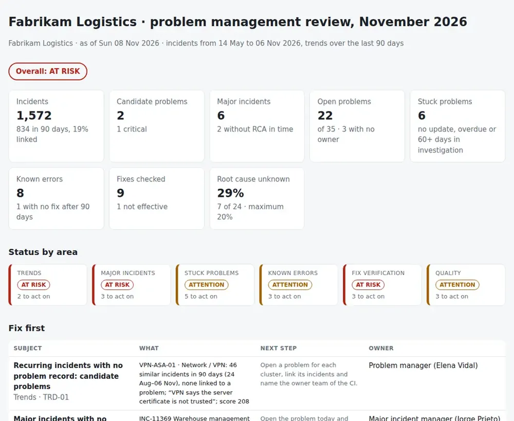

Forty-six incidents about a VPN certificate error have been closed one by one since late August and nobody has opened a problem record, the ticket meant to find and remove the cause behind repeat incidents. That is what the monthly problem management review published with this post finds. It is a tool that runs on demo data from a made-up logistics company with three sites, six months of history, 1,572 incidents, 35 problems and 20 changes, reviewed on 8 November with the problems placed on purpose. Its verdict for the month is at risk.
Problem management is the part of ITSM that everyone agrees with and nobody has time for. The service desk resolves the same incident again and again with the same workaround, every ticket closes inside its SLA and the dashboard looks fine. The tool groups similar incidents on the same configuration item, the CI, and category, and ranks the clusters with no problem record by how many incidents they hold, their priority and how critical the CI is in the CMDB. In the demo, seventeen printer driver incidents at one site look like seventeen different tickets until they are grouped.
A warehouse outage with no problem record three weeks later
The warehouse system went down for four hours three weeks ago and there is still no problem record. The transport system outage of the week before has one, under investigation, with no root cause. The review checks every major incident five working days after it happened, leaving weekends and holidays out: it needs a problem record and that problem needs a root cause.
Three open problems have no owner and two of them are the same problem. The tool counts six stuck problems in all: no update for a month, past the target date, under investigation for more than 60 days, with no owner, or owned by a team other than the one that owns the CI. Almost a third of the root causes say Unknown or Other, which is valid while investigating but never as the way to close.
A fix closed in September and eleven more incidents since
A change closed the file share problem in September and eleven more incidents of the same kind have arrived since, most of them not linked to it. The tool checks whether a fix worked by looking for the words the problem's incidents had in common, on the same CI, after the implementation date. It also flags problems closed on a change that was backed out and reopened incidents.
A known error on the warehouse scanners, a problem whose cause is known and has a workaround, has lived on that workaround for 120 days and nobody has raised the change for the permanent fix. The review lists workarounds older than 90 days with no change behind them, and workarounds the service desk has not got.
Why the grouping is simple on purpose
Each incident summary becomes a set of words without stop words, and two summaries are similar when they share at least two words and half the words of the shorter one. Each incident joins a cluster in order of creation, so the result is the same every time and the common words explain why the incidents were grouped.
How to use it with real data
The tool reads incidents and problems exported from Jira Service Management, HaloITSM or EasyVista, the linked changes and the CMDB. The repository includes a read-only PowerShell exporter for the Jira Service Management Cloud REST API that only sends GET requests with JQL, with an API token asked for at run time and never stored. It runs on Python with only the standard library and produces a status per area, a web report, a pack with a 60-minute agenda, a decision column and the list for the next CAB, and CSV files. It comes with 14 tests and a runbook. It sits between the major incident kit and the change calendar review published earlier in the series. The company and its tickets are fictional.
Where it comes from
The tool comes from being the formal process owner of incident, change and problem management and the CMDB, leading the technical response in major incidents and their root cause analysis, and administering Jira Service Management. The lessons I keep: a workaround that works is the most expensive thing in the service desk, because it hides the problem, and closing a problem when the change goes in is too early.
Want to bring it to your environment or adapt it to your case? Get in touch and we can look at it together.
Tech Career Lab · newsletter
Found this useful? Every two weeks I send one practical idea for IT professionals: LinkedIn, projects, networking and hiring processes.
Sign up and get the 33 ideas →